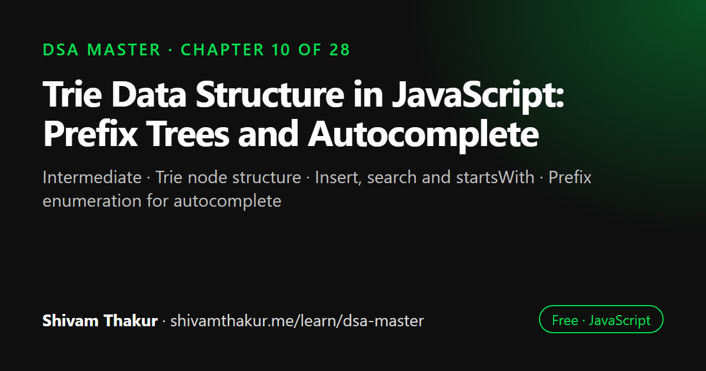

Chapter 10 of 28 · Intermediate
Trie Data Structure in JavaScript: Prefix Trees and Autocomplete
Tries — The Specialist Structure for Strings

A trie, or prefix tree, stores strings character by character so that words with the same prefix share the same path from the root. It answers prefix questions, such as which words start with a given prefix, in time proportional to the prefix length. This chapter builds a trie in JavaScript and applies it to autocomplete, word break and grid word search.
In this chapter you will learn
- Trie node structure
- Insert, search and startsWith
- Prefix enumeration for autocomplete
- Trie-powered backtracking (Word Search II)
- Compressed tries (radix trees)
10.0 Why We Need a Structure Beyond Hashing for This
Chapter 4 gave us Map/Set for O(1) average-case exact-match string lookup — "does this exact word exist?" But consider a genuinely different question: "what words exist that start with this prefix?" — the exact question behind autocomplete, spell-checkers, and IP routing tables. A hash table is fundamentally bad at this: it can tell you if "cat" exists, but to find every stored word starting with "ca", you'd have to scan every single key in the entire table — O(n · k) where n is the number of stored strings and k is their length — because hashing deliberately scrambles similarity away (recall Chapter 4: a good hash function spreads similar inputs to different buckets, which is exactly what makes prefix-sharing invisible to it). This chapter introduces the trie, a structure purpose-built for exactly this prefix-shaped question.
10.1 What Is a Trie?
Definition: A trie (pronounced "try," from retrieval, though many engineers pronounce it "tree" — both are common) is a tree structure in which each node represents a single character, and paths from the root down through the tree spell out strings, with common prefixes naturally shared as common paths.
Real-Life Analogy: A Dictionary Organized by Shared Beginnings
Imagine sorting every word in a dictionary not alphabetically on a shelf, but into a physical structure where all words starting with "ca" branch off from one shared spot, and within that, all words starting with "cat" branch off from an even more specific shared spot. Looking up whether "cat," "car," and "cats" exist means walking down largely the same path for their shared prefix "ca," only diverging where the words actually differ. This shared-path structure is exactly a trie, and it's precisely why prefix-based questions are so natural for it — the shared prefix is literally a shared, single path in the tree, not something you have to discover by comparing many separate strings against each other.
ASCII Visualization: A Trie Storing "cat," "car," "card," "dog"
(root)
/ \
c d
| |
a o
/ \ |
t r g*
* | (end of "dog")
(end d
of *
"cat") (end of "card")
|
(also marks "car" as complete, at the 'r' node itself)
Let's draw this more precisely, with each node's "end of word" flag shown explicitly:
root
├─ c
│ └─ a
│ ├─ t [END: "cat"]
│ └─ r [END: "car"]
│ └─ d [END: "card"]
└─ d
└─ o
└─ g [END: "dog"]
Notice: "cat", "car", and "card" all share the path root -> c -> a.
"car" and "card" additionally share root -> c -> a -> r.
This SHARED PATH is the entire mechanism that makes prefix search fast.10.2 Building a Trie From Scratch
10.2.1 The Node Structure
Each trie node needs: a way to reference its children (one per possible next character), and a flag marking "a complete word ends here."
class TrieNode {
constructor() {
this.children = new Map(); // character -> TrieNode (Chapter 4's Map, used perfectly here!)
this.isEndOfWord = false;
}
}10.2.2 The Full Trie Class: Insert, Search, and StartsWith
class Trie {
#root = new TrieNode();
insert(word) {
let current = this.#root;
for (const char of word) {
if (!current.children.has(char)) {
current.children.set(char, new TrieNode());
}
current = current.children.get(char);
}
current.isEndOfWord = true;
}
// Time: O(k), where k = word length — NOT dependent on how many words are already stored!
// Space: O(k) worst case (if none of the word's characters/path already existed)
search(word) {
const node = this.#findNode(word);
return node !== null && node.isEndOfWord === true;
}
// Time: O(k)
startsWith(prefix) {
return this.#findNode(prefix) !== null;
}
// Time: O(k)
#findNode(str) {
let current = this.#root;
for (const char of str) {
if (!current.children.has(char)) {
return null; // path doesn't exist — str is not a prefix of anything stored
}
current = current.children.get(char);
}
return current; // the node representing the END of `str`'s path (may or may not be a full word)
}
}
const trie = new Trie();
trie.insert('cat');
trie.insert('car');
trie.insert('card');
trie.insert('dog');
console.log(trie.search('car')); // true — "car" was explicitly inserted
console.log(trie.search('ca')); // false — "ca" was never inserted as a complete word
console.log(trie.startsWith('ca')); // true — "ca" IS a valid prefix of stored words
console.log(trie.startsWith('cx')); // false — no stored word starts with "cx"Dry Run: Inserting "cat" Then Searching
insert('cat'):
current = root
char='c': root.children has no 'c' -> create new TrieNode, set it. current = that node.
char='a': current(c-node).children has no 'a' -> create new TrieNode. current = that node.
char='t': current(a-node).children has no 't' -> create new TrieNode. current = that node.
Loop ends. current(t-node).isEndOfWord = true.
Trie now: root -> c -> a -> t[END]
search('cat'):
#findNode('cat'): walk root->c->a->t, following existing paths the whole way. Returns t-node.
t-node.isEndOfWord is true -> search returns TRUE ✓
search('ca'):
#findNode('ca'): walk root->c->a. Returns a-node.
a-node.isEndOfWord is FALSE (only 't' after it was ever marked as an end) -> search returns FALSE ✓
startsWith('ca'):
#findNode('ca') returns a-node (not null) -> startsWith returns TRUE ✓ (path exists, regardless of isEndOfWord)10.3 The Killer Feature: Prefix-Based Queries
This is where the trie's design pays off in ways a hash table fundamentally cannot match.
10.3.1 Autocomplete: Finding All Words With a Given Prefix
class TrieWithAutocomplete extends Trie {
getAllWordsWithPrefix(prefix) {
const results = [];
const prefixNode = this._findNodeForAutocomplete(prefix);
if (prefixNode === null) return results; // no words share this prefix at all
this.#collectAllWords(prefixNode, prefix, results);
return results;
}
_findNodeForAutocomplete(str) {
let current = this._root ?? this.root; // (illustrative — see note below on private field access)
for (const char of str) {
if (!current.children.has(char)) return null;
current = current.children.get(char);
}
return current;
}
#collectAllWords(node, currentPrefix, results) {
if (node.isEndOfWord) {
results.push(currentPrefix);
}
for (const [char, childNode] of node.children) {
this.#collectAllWords(childNode, currentPrefix + char, results);
}
}
}A Note on the Illustrative Code Above
The snippet above hints at a real design tension: private class fields (#root) are not accessible from a subclass, so a genuinely clean implementation would either expose a protected-style accessor, or (more idiomatically in production code) implement getAllWordsWithPrefix as a method directly on the main Trie class rather than via subclassing. We show the subclass version here only to illustrate the algorithm; in real code, prefer adding this method directly to the Trie class from section 10.2.2 using its private #root field directly, avoiding the awkward private-field-across-subclass issue entirely.
// The cleaner, production-quality version, added directly to the Trie class:
class Trie {
#root = new TrieNode();
// ... insert, search, startsWith as before ...
getAllWordsWithPrefix(prefix) {
const results = [];
let current = this.#root;
for (const char of prefix) {
if (!current.children.has(char)) {
return results; // empty — no stored word has this prefix
}
current = current.children.get(char);
}
this.#collectAllWords(current, prefix, results);
return results;
}
#collectAllWords(node, currentWord, results) {
if (node.isEndOfWord) {
results.push(currentWord);
}
for (const [char, childNode] of node.children) {
this.#collectAllWords(childNode, currentWord + char, results);
}
}
}
const trie = new Trie();
['cat', 'car', 'card', 'care', 'dog'].forEach(word => trie.insert(word));
console.log(trie.getAllWordsWithPrefix('ca')); // ['cat', 'car', 'card', 'care']
console.log(trie.getAllWordsWithPrefix('do')); // ['dog']
console.log(trie.getAllWordsWithPrefix('z')); // []Dry Run: getAllWordsWithPrefix('ca')
Trie contains: cat, car, card, care, dog
Step 1: walk 'c' -> 'a' from root. current = the 'a' node (shared by cat/car/card/care).
Step 2: #collectAllWords(a-node, 'ca', results):
a-node.isEndOfWord? false (no complete word is JUST "ca")
for each child of a-node: 't' and 'r'
#collectAllWords(t-node, 'cat', results):
t-node.isEndOfWord? TRUE -> results.push('cat') results=['cat']
t-node has no children -> done with this branch
#collectAllWords(r-node, 'car', results):
r-node.isEndOfWord? TRUE -> results.push('car') results=['cat','car']
r-node has children: 'd' and 'e'
#collectAllWords(d-node, 'card', results):
d-node.isEndOfWord? TRUE -> results.push('card') results=['cat','car','card']
#collectAllWords(e-node, 'care', results):
e-node.isEndOfWord? TRUE -> results.push('care') results=['cat','car','card','care']
Final: ['cat', 'car', 'card', 'care'] ✓ (order reflects DFS exploration order of children)10.4 Word Break and Other Trie-Adjacent Recursion Problems
Tries frequently pair with recursion/backtracking (Chapter 2, formalized further in the upcoming Backtracking Masterclass) for problems involving decomposing a string using a dictionary.
10.4.1 Word Search II Preview: Combining Tries With Grid DFS
A classic hard problem: given a 2D grid of letters and a list of words, find all words that can be constructed by tracing a path through adjacent grid cells. The naive approach checks each word against the grid independently (O(words × grid cells × 4^wordLength) for each word's DFS) — brutally slow. The trie-based optimization: insert all words into a single trie, then do ONE combined DFS over the grid, following trie paths instead of committing to one word at a time, allowing many words' searches to share work exactly the same way trie insertion shares prefixes.
// Skeleton illustrating the KEY IDEA (full grid-DFS mechanics belong to
// the Backtracking Masterclass chapter, where this problem is treated in full):
function findWordsSkeleton(grid, words) {
const trie = new Trie();
words.forEach(word => trie.insert(word));
// Conceptually: DFS from every grid cell, but at each step, only continue
// exploring in directions where trie.startsWith(currentPathSoFar) is true.
// This PRUNES the search dramatically — if "cx" isn't a prefix of ANY word,
// we stop exploring that entire branch immediately, rather than continuing
// to build a doomed-to-fail path character by character.
}10.5 Trie Variant: Compressed Tries (Radix Trees) — A Conceptual Introduction
10.6 Real-World Applications
10.7 Edge Cases and Gotchas Checklist for Trie Problems
- Empty string insertion/search. Does inserting
""correctly mark the root itself asisEndOfWord = true? Does searching for""correctly returntruein that case? - Case sensitivity. Decide and state whether
"Cat"and"cat"should be treated as the same word (normalize with.toLowerCase()) or genuinely distinct paths. - Confusing
searchandstartsWith— re-read section 10.2.2's warning; this is the single most common trie bug. - Unicode/multi-byte characters — per Chapter 3's lesson, iterate with
for...of(which is code-point aware) rather than manual index-based character access if Unicode correctness matters, since a trie built character-by-character via naive indexing can silently split multi-byte characters incorrectly. - Deletion from a trie — removing a word requires care: you can only safely delete a node if it has no children AND isn't the end of some other still-valid word; deleting a shared-prefix node would corrupt other stored words. This is a common, trickier follow-up question worth practicing explicitly (included in the coding problems below).
- Memory usage awareness — for very large dictionaries with little prefix sharing, be ready to discuss the radix tree/compressed trie alternative (section 10.5) if memory efficiency comes up.
10.8 Chapter Summary
This chapter introduced the trie as the direct, purpose-built answer to a question that Chapter 4's hash tables are structurally unable to answer efficiently: "what stored strings share this prefix?" We built the intuition that a trie's entire value proposition comes from literally sharing tree paths for shared prefixes — a mechanism that hashing deliberately destroys, since good hash functions are specifically designed to scatter similar inputs apart (recall Chapter 4's uniform-distribution requirement), making prefix-relatedness invisible to a hash table by design.
We implemented a complete trie from scratch using Map-based children (justified over a fixed-size array by its generality across arbitrary character sets, a direct callback to Chapter 4's Map-vs-plain-object reasoning), and carefully distinguished the chapter's single most common bug: search must check isEndOfWord, while startsWith only needs the path to exist — both share the same path-walking logic, differing only in this one final check. We established the trie's headline complexity claim, worth memorizing verbatim: insert, search, and startsWith are all O(k), where k is the query's own length, genuinely independent of how many words are already stored — a property neither a hash table (average-case O(k), degradable by collisions) nor a sorted array (O(k log n)) can match unconditionally.
We then demonstrated the trie's actual killer feature — prefix-based enumeration (autocomplete) — implemented as "walk to the prefix node, then DFS-collect every complete word in its subtree" (directly reusing Chapter 8's preorder traversal logic, just applied to a trie's variable-branching nodes instead of a binary tree's fixed two children), running in O(p + m) time where p is the prefix length and m is the total size of the matching results — again structurally independent of the total stored word count n. We previewed how tries combine with DFS/backtracking to dramatically prune impossible search branches in problems like Word Search II (full treatment deferred to the Backtracking Masterclass), introduced compressed tries (radix trees) as the memory-efficient answer to plain tries' single-child-chain waste, and closed with a grounded list of real production use cases — autocomplete, spell-checking, IP routing, and word-game solving — that make this chapter's structure far from a purely academic exercise.
10.9 Revision Notes
- Tries share tree paths for shared string prefixes — the exact mechanism hash tables (Chapter 4) cannot provide, since good hashing deliberately scatters similar inputs apart.
- Use
Map-based children for generality across any character set; a fixed-size array only works for small, known, fixed alphabets. searchrequires checkingisEndOfWord;startsWithonly requires the path to exist — conflating these is the most common trie bug.- Insert/search/startsWith are O(k), where k is the query's own length — independent of the total number of stored words, unlike hash tables (avg-case, collision-degradable) or sorted arrays (O(k log n)).
- Prefix enumeration (autocomplete) is O(p + m): walk to the prefix node, then DFS-collect all complete words in its subtree — structurally a preorder traversal (Chapter 8) over variable-branching nodes.
- Tries combine with DFS/backtracking to prune impossible search branches (Word Search II) — checking
startsWithat each step avoids exploring doomed paths. - Compressed tries (radix trees) merge non-branching single-child chains into substring-labeled nodes, trading implementation complexity for memory efficiency — know this exists even without implementing it.
- Real use cases: autocomplete, spell-checking, IP routing (longest-prefix match), word-game solvers.
10.10 Mind Map (ASCII)
TRIES
|
+------------------+------------+------------+---------------------+
| | | |
WHY TRIES? CORE STRUCTURE KILLER FEATURE VARIANTS &
(vs hashing, & OPERATIONS (prefix enumeration) APPLICATIONS
Ch.4 callback) | | |
| Map children getAllWordsWithPrefix Compressed Trie
Hash scatters (vs fixed array, = walk to prefix node (Radix Tree):
similar inputs Ch.4 Map-vs-object) + DFS-collect subtree merge single-child
apart -> can't | (= Ch.8 preorder chains -> less
find shared insert/search/ traversal, variable memory, harder
prefixes startsWith branching) insert/delete
| = O(k), k=word | |
Trie: shared length, INDEPENDENT O(p+m) time Real applications:
PATH for shared of total words n! | Autocomplete,
prefix (literal | DFS + Trie pruning spell-check,
tree structure) search checks (Word Search II IP routing
isEndOfWord; preview, full in (longest prefix
startsWith doesn't Backtracking chapter) match), word games
(#1 common bug!)10.11 Cheat Sheet
TRIE QUICK REFERENCE
=======================
insert(word) O(k) -- k = word length, independent of n (total stored words)
search(word) O(k) -- MUST check isEndOfWord at the final node
startsWith(prefix) O(k) -- only needs the path to exist, NOT isEndOfWord
getAllWithPrefix() O(p + m) -- p=prefix length, m=total chars in matching results
TRIE vs HASH TABLE (Ch.4) FOR STRINGS
=========================================
Exact match lookup: Hash table O(1) avg vs Trie O(k) -- hash table wins here
Prefix enumeration: Hash table O(n*k) vs Trie O(p+m) -- TRIE wins decisively
Memory for shared prefixes: Hash table: none shared vs Trie: shared automatically
COMMON BUG CHECKLIST
========================
search() forgetting isEndOfWord check -> silently behaves like startsWith()
Case sensitivity not normalized -> "Cat" and "cat" treated as different paths (may be intended!)
Empty string "" -> should mark the ROOT node itself as isEndOfWord
Deletion -> only remove a node if childless AND not another word's endpoint
WHEN TO MENTION RADIX TREES (COMPRESSED TRIES)
==================================================
"How would you make this trie more memory-efficient?"
-> merge non-branching single-child chains into one substring-labeled node
-> trade-off: more complex insert/delete (may need to split/merge segments)10.12 Key Takeaways
- Tries share tree paths for shared prefixes — solving exactly what hash tables cannot: efficient prefix-based queries.
- Insert/search/startsWith are O(k) — the query's own length, genuinely independent of how many words are stored.
searchneedsisEndOfWord;startsWithdoesn't — the most common trie implementation bug.- Autocomplete (prefix enumeration) is O(p + m), reusing Chapter 8's preorder-traversal logic over variable-branching nodes.
- Tries prune backtracking search spaces (Word Search II) by making "is this partial path still viable?" an O(1)-per-character check.
- Compressed tries (radix trees) trade implementation complexity for memory efficiency — know they exist, know why.
10.13 20 Multiple Choice Questions
Tap an answer to check it. Your score updates as you go.
Score: 0 / 0 answered (20 questions)
What problem does a trie solve that a hash table (Chapter 4) fundamentally struggles with?
Why can't a hash table efficiently answer "what words share this prefix"?
What does each node in a trie typically represent?
Why is
Mapoften preferred over a fixed-size array for a trie node's children?What is the single most common bug when implementing trie
search?What is the time complexity of
trie.insert(word)where the word has length k?What is the time complexity of
trie.search(word)?What is the key structural difference between
searchandstartsWithin a trie?What is the time complexity of enumerating all words with a given prefix, in terms of prefix length p and total matching result size m?
What traversal technique from Chapter 8 is directly reused when collecting all words in a trie's subtree?
What is a compressed trie (radix tree)?
What is the main trade-off of using a compressed trie instead of a plain trie?
Which real-world system commonly uses compressed tries (radix trees) for extremely fast lookups?
In the Word Search II problem, how does a trie help prune the search space during DFS/backtracking?
What should happen when inserting the empty string
""into a trie?What must be verified before deleting a node during trie word-deletion?
Why does Unicode handling matter for trie implementations, per Chapter 3's lessons?
What is a genuine, real-world, non-academic application of tries mentioned in this chapter?
Why is a trie's insert/search complexity described as "independent of n" particularly notable?
What data structure combination is used in the Word Search II problem to efficiently search many words at once against a grid?
Show the answer key
1-b, 2-b, 3-b, 4-b, 5-a, 6-b, 7-b, 8-b, 9-b, 10-b, 11-b, 12-b, 13-b, 14-b, 15-b, 16-b, 17-b, 18-b, 19-b, 20-a
10.14 20 Coding Problems
Easy
- Implement
insertandsearchfor a basic trie, from memory (section 10.2.2). - Implement
startsWith, and write a small test proving it behaves differently fromsearchon a prefix that isn't itself a complete stored word. - Write a function to count the total number of complete words stored in a trie (traverse and count
isEndOfWordflags). - Write a function to find the longest common prefix among an array of strings using a trie (insert all strings, then walk down while each node has exactly one child and isn't an end-of-word).
- Write a function that checks if a trie is empty (no words stored at all).
Medium
- Implement
getAllWordsWithPrefixfrom memory (section 10.3.1), then verify against the book's dry run. - Implement trie-based word deletion, correctly handling the "only delete nodes that are childless and not another word's endpoint" rule from section 10.7.
- Given a list of words, group them by shared prefixes of length 2 using a trie-based approach, and compare to a hash-map-based grouping approach (Chapter 4) in a comment.
- Implement a simple autocomplete system that, given a prefix, returns up to the first 5 matching words found via trie DFS.
- Given a trie storing a dictionary, implement a spell-checker function that returns
true/falsefor whether a word is valid, and if invalid, suggests up to 3 valid words with the same prefix as the longest valid prefix of the input.
Hard
- Implement a trie that supports wildcard search, where
.matches any single character (e.g., searching"c.t"should match "cat," "cot," etc., if stored) — requires a modified DFS-based search instead of simple path-walking. - Given a 2D grid of letters and a list of words, implement the full Word Search II solution combining a trie with grid DFS/backtracking, including proper visited-cell tracking and backtracking cleanup (a full preview of the Backtracking Masterclass chapter's core techniques).
- Implement a trie-based solution for "Replace Words" — given a dictionary of word roots and a sentence, replace all words in the sentence with their shortest matching root from the dictionary, if one exists.
- Design and implement a simplified compressed trie (radix tree) supporting
insertandsearch, where nodes can store multi-character substrings, handling the logic for splitting an existing compressed node when a new word diverges partway through it. - Given a stream of search queries with corresponding click-through counts, implement a trie-based "top search suggestions" system that returns the top 3 most popular completions for any given prefix (combining this chapter's trie with Chapter 9's heap/Top-K techniques).
Interview Level
- (Google-level) Design an autocomplete system for a search engine that must return the top K most frequent completions for a prefix, efficiently updating frequencies as new searches occur — combine tries (this chapter) with heaps (Chapter 9) for the top-K aspect.
- (Amazon-level) Given a product catalog, implement a trie-based "search-as-you-type" feature for an e-commerce search bar, returning matching product names as the user types each character, and discuss (in comments) the latency benefits of an incremental trie walk versus re-querying a database on every keystroke.
- (Microsoft-level) Implement a trie-based solution to find all words in a dictionary that are valid "concatenated words" (formed entirely by concatenating at least two shorter words also present in the dictionary).
- (Meta-level) Design a trie-based content moderation filter that efficiently checks if any substring of a user's post matches a list of banned phrases, discussing the complexity trade-offs versus a naive substring-search approach (a preview of the String Algorithms chapter's Rabin-Karp/KMP techniques for this exact problem shape).
- (Netflix-level) Design a trie-based "search suggestions as you type" feature for a video search bar, supporting fuzzy matching for common typos (e.g., using the wildcard trie from problem 11 as a starting point), and discuss in comments how you'd balance suggestion relevance against query latency at scale.
10.15 5 Interview Questions
- "Why would you use a trie instead of a hash table for this string problem?" (Tests understanding of prefix-query superiority, the chapter's central thesis.)
- "What's the difference between
searchandstartsWithin a trie, and why do they share almost identical code?" (Tests the single most common implementation bug and its underlying cause.) - "What is the time complexity of trie operations, and why is it described independent of the number of stored words?" (Tests the headline complexity claim and its justification.)
- "How would you make a trie more memory-efficient for a large, sparse dictionary?" (Tests awareness of compressed tries/radix trees.)
- "How would a trie help you efficiently solve a word-search-on-a-grid problem with many target words?" (Tests the trie-plus-backtracking pruning technique.)
10.16 3 Real Projects
- Complete Trie Library: Build a full
Trieclass supporting insert, search, startsWith, prefix enumeration, and deletion (with correct childless/endpoint-safe removal), with a self-check script verifying correctness across randomized word sets. - Autocomplete CLI Tool: Build a Node.js CLI that loads a word list (e.g., a dictionary file), inserts it all into a trie, and provides an interactive "type a prefix, see live suggestions" experience — a direct, practical reinforcement of section 10.3's killer feature.
- Trie vs. Hash Table Benchmark: Build a benchmark comparing trie-based prefix enumeration against a naive hash-table/Set-based full-scan approach (Chapter 4) at increasing dictionary sizes, empirically demonstrating the O(p+m) vs. O(n·k) gap that motivates this entire chapter.
10.17 Further Reading
- Edward Fredkin's original 1960 paper introducing the trie, for historical context on the structure's name and origin.
- Search "Patricia trie" and "radix tree implementation" for deeper, systems-level treatments of the compressed trie variant introduced conceptually in section 10.5.
- MDN Web Docs: "Map" (revisited from Chapter 4) for the exact iteration-order and performance guarantees relied upon in this chapter's
Map-based trie node children. - LeetCode's "Trie" problem tag, and specifically "Word Search II" and "Implement Trie (Prefix Tree)," for extensive additional practice directly extending this chapter's core implementations.
Trie Data Structure in JavaScript: frequently asked questions
What is a trie used for?
Tries are used for autocomplete, spell checkers, search suggestions, IP routing tables and word games. They are best whenever you need to look up or list strings by prefix.
What is the time complexity of trie operations?
Insert, search and startsWith are O(k), where k is the length of the word or prefix. That cost does not depend on how many words the trie stores.
Why not just use a hash set for words?
A hash set answers whether an exact word exists, but it cannot efficiently answer which words start with a prefix. A trie handles both, because every prefix is a path in the tree.
What is the difference between search and startsWith in a trie?
search returns true only if the path exists and its last node is marked as the end of a word. startsWith only needs the path to exist. Forgetting the end-of-word flag is the most common trie bug.